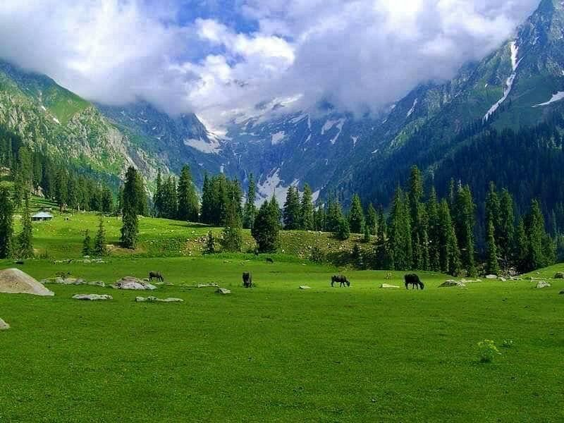

Welcome to the land of pristine beauty and breathtaking landscapes Kumrat Valley. Join me on a virtual tour as I recount my unforgettable adventures in this hidden gem of Pakistan.

My journey began with a winding road that led me deeper into the heart of nature. Towering pine trees on both side of zig zag road of the valley,
and the melody
of a distant river accompanied my every step.
we were camping between the mountains, I found the perfect camping spot. As the sun dipped below the horizon, a canvas of stars emerged, illuminating the valley.
The crackling campfire and the distant sound of wildlife added to the magic of the night.
The next morning, I get up early and started my journey with trek to black spring along with my cousins
, a meadow that seemed to stretch to the heavens.
The lush greenery and vibrant wildflowers created a another colors to my Trekking.
Each step was a dance with nature.
In the heart of Kumrat, I encountered warm and welcoming locals. Their stories, traditions, and the rich culture of the valley added a unique flavor to my journey.
A cup of traditional chai became a doorway to their world.